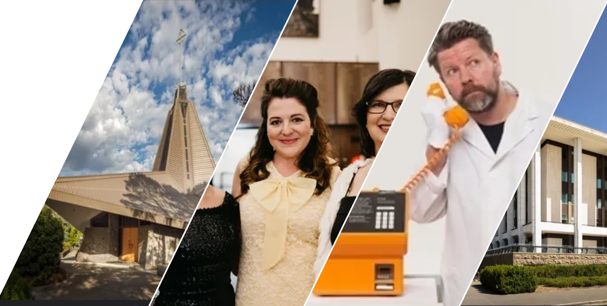
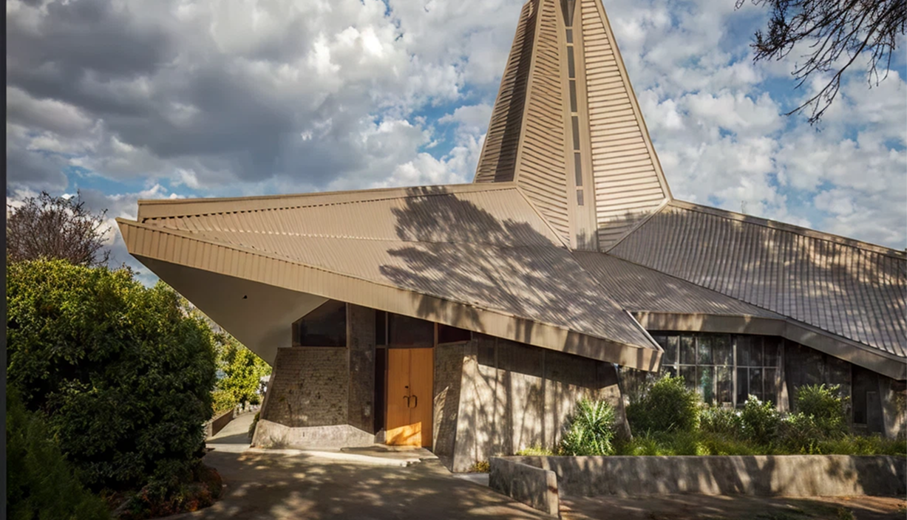
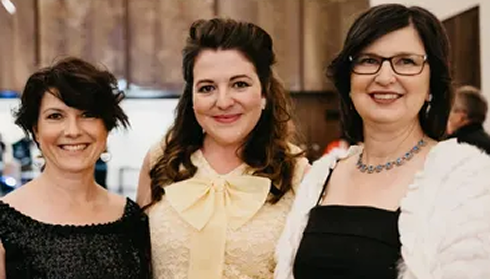

ABOUT
CANBERRA MODERN
What's so special about
Canberra?
Canberra is a young city with a rich architectural legacy. With major boom periods in the 1920s and again from the 1950s-1980s – the architectural aesthetic of the city is eclectic, but deliberately cohesive.
Canberra Modern are proud to be supporting Tim Ross and Kit Warhurst for a sentimental MOTEL journey in an exploration of Australia at leisure. MOTEL, the new show from the creators of the award winning Man About the House.

Major developments not only in residential, but civic and community buildings saw the frequent involvement of architects now considered pioneers of the modernist movement, and the construction of a key collection of iconic and unique mid-century buildings in Australia.
Many of these structures, which make an irreplaceable contribution to Canberra, have already been lost and many face risk of being lost in the near future.
So we at Canberra Modern are here to help by engaging Canberra and Australia with their contemporary National Capital.

Who are Canberra Modern?
Canberra Modern is a passionate team of heritage and design practitioners who have a genuine love for the city in which they live.
Edwina Jans
An archaeologist, museums and cultural heritage expert who works with GML Heritage. Edwina specialises in education, communication and innovative engagement for heritage places.
Amy Jarvis
A heritage management and interpretation specialist who works at Philip Leeson Architects as a Senior Heritage Consultant. Amy was awarded a Churchill Fellowship in 2018/19 to investigate advocacy and engagement models around mid-century architecture in the USA.
Rachel Jackson
An interior designer and heritage management expert who is Principal at GML Heritage. Rachel is a specialist in cultural landscape assessment and in heritage and sustainability. Rachel is a 2022/23 Getty Conservation Institute Scholar.
Our Patron Tim Ross
TV and radio host, comedian, author and self-confessed 'Design Nerd', Tim 'Rosso' Ross has always had a passion for architecture and design has advocated in this space for many years, often in new, engaging and hilarious ways.
A long-time supporter of Canberra Modern, having performed several of his sell out shows within the festival, Tim also passionately supports important issues in Australian architecture and design and speaks nationally on preserving Australia's important architectural character and the legacy of the many great designers of our nation.
In 2018, Tim was awarded the National Trust Heritage Award for Advocacy and in 2019, the National President's Prize from the Australian Institute of Architects, to "recognise him for his advocacy, activism and outstanding contribution to the architecture profession".
Canberra Modern are thrilled to have Tim as our Patron and look forward to many years of collaboration and celebration of the rich mid-century character of our National Capital.